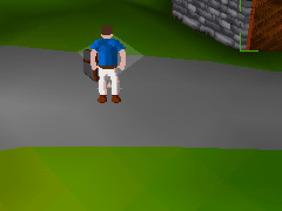
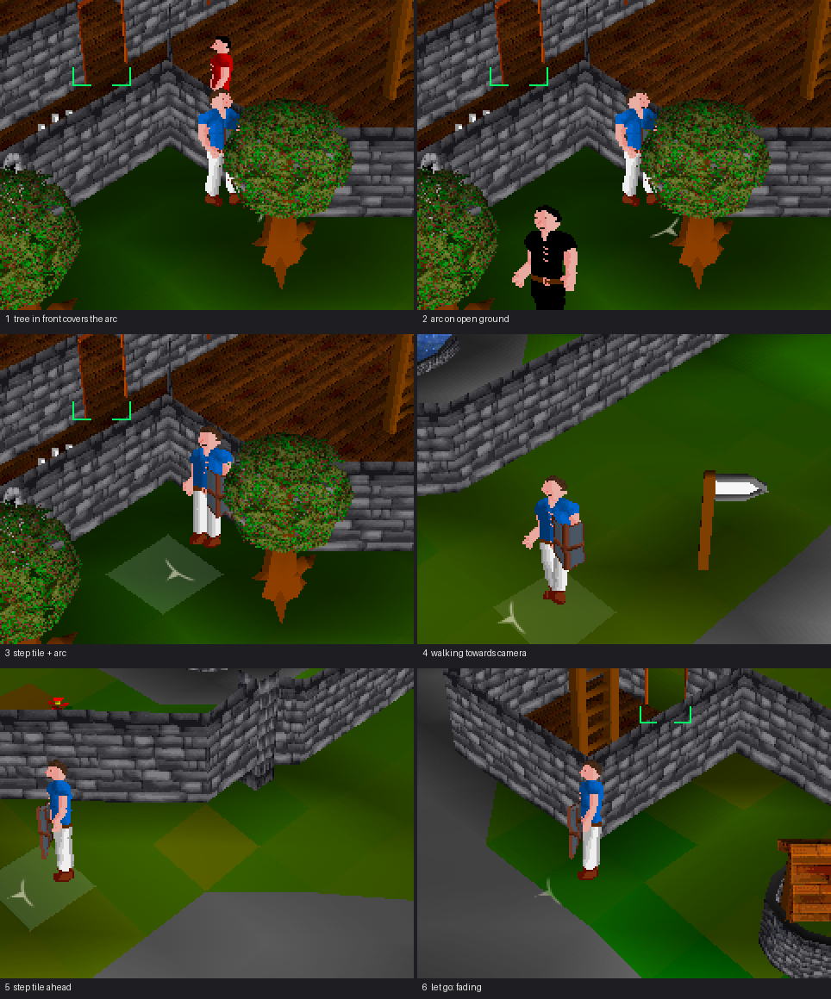
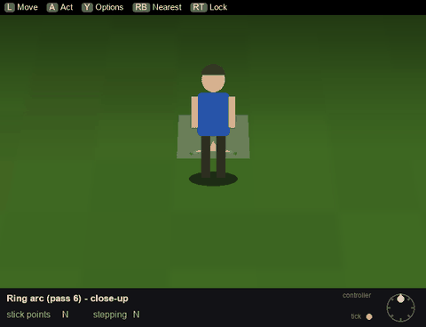
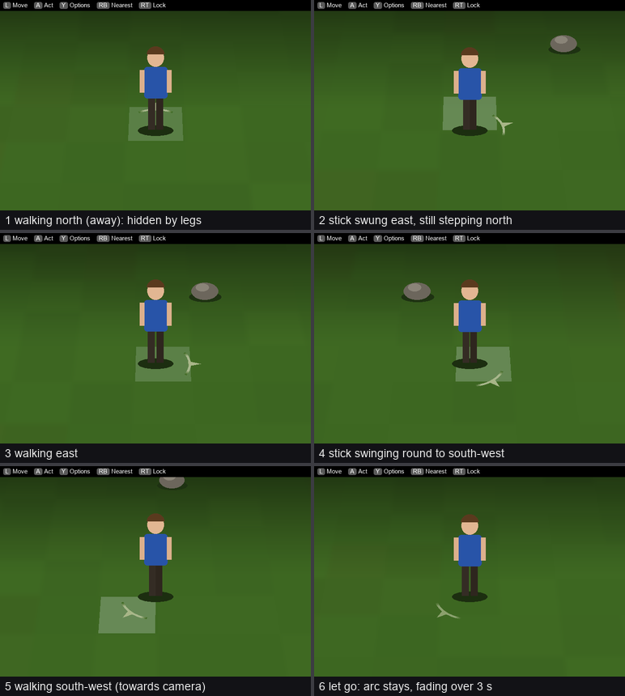
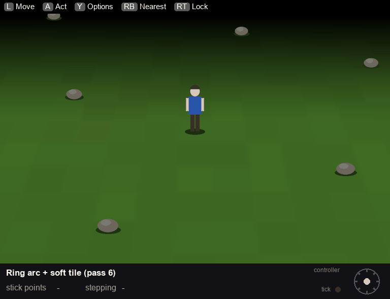
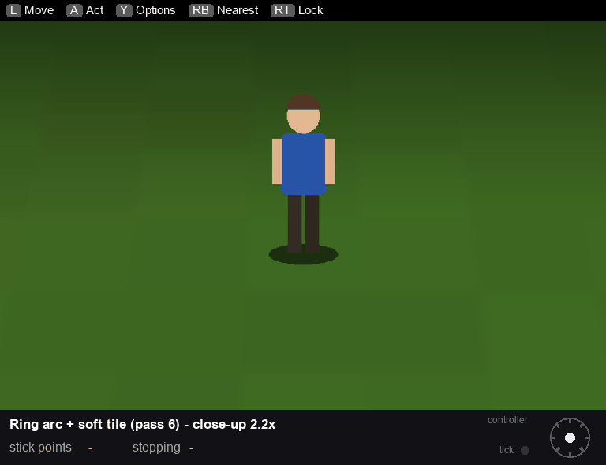
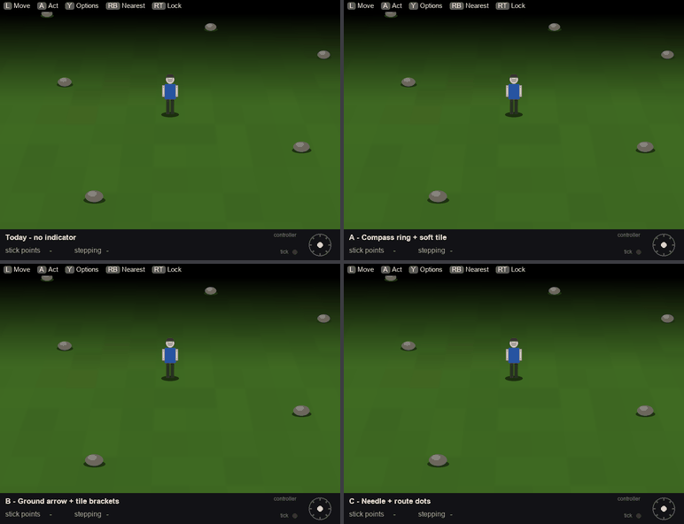

Pad movement indicator
In the game (built, 2026-10-09)
The real client on the dev server, a scripted controller walk near Lumbridge castle. Crop around the character, 2x. One shot every 0.2 s.

In the game - key moments

The agreed mockup (pass 6)
Mockup for review, not in the game yet. Stand-in scene at the game's own camera angle (pitch 912), simulating how the pad really walks: stick snapped to 8 directions, one walk per server tick (492 ms).
- Arc: thin, ±30° around the stick direction, fading over its last 10° each side.
- Triangle: base sits on the arc, about 55% opacity, follows the stick smoothly.
- Release: stays where the stick last pointed, fades out over 3 s.
- Step tile: soft pulsing fill on the tile the character is stepping into.
- Drawn under the character, so walking away hides it behind the legs.
Close-up (2.2x)

Key moments

Game size

The strip under each view (stick dial, tick light, "not yet" call-out) explains the mockup and is not part of the design.
Full-size close-up

The first three proposals (A, B, C) and today
